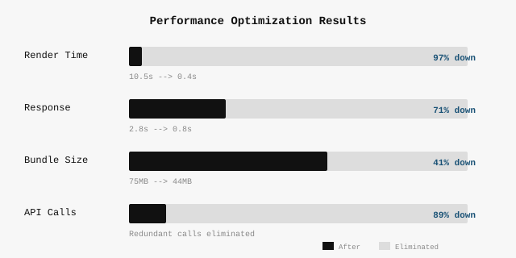
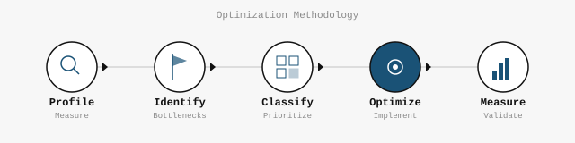
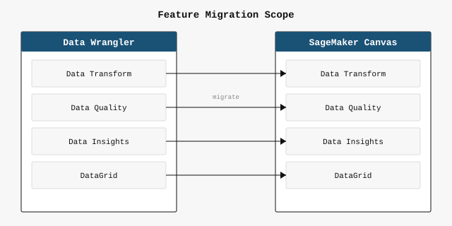
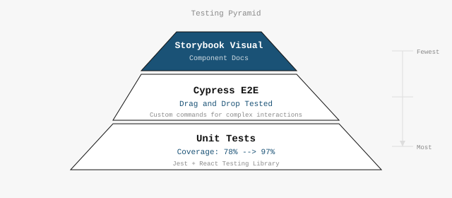

Frontend at AWS: S3 · SageMaker · Canvas

Across S3 Console, SageMaker Data Wrangler, and SageMaker Canvas, I applied systematic React profiling and optimization to achieve 97% render time reduction, 41% bundle size cut, and 89% stale API call elimination.
Methodology
Every optimization followed the same disciplined cycle:

Problem → Solution
1. Data Quality Report Browser Freeze
Product: SageMaker Canvas (migrated from Data Wrangler)
Data Wrangler's Data Quality Report rendered all column visualizations at once using D3. When the migration to Canvas expanded dataset size to 100+ columns, N D3 Canvas instances initialized simultaneously — freezing the browser.
Solution: Implemented IntersectionObserver-based lazy rendering.
Each visualization only initializes when its section scrolls into the viewport.
Result: Page loads without freezing regardless of column count.
2. Slow DataGrid Response
Product: SageMaker Data Wrangler
The main DataGrid had a 2.8-second response time to user interactions. Profiling revealed excessive re-renders cascading through the component tree.
Solution: Applied React.memo to visualization components,
useCallback for event handlers, and render-on-scroll for DataGrid rows.
Result: 0.8s response time — 71% reduction.
3. Data Insights Initial Render
Product: SageMaker Canvas
After migrating Data Wrangler features into Canvas, the Data Insights page took 10.5 seconds to render and blocked the UI for 75% of that time.
Solution: Systematic React optimization —
React.memo on all visualization components,
useCallback for stable references,
and lazy component loading for heavy chart components.
Result: 0.4s initial render — 97% reduction. UI blocking delay reduced by 75%.
4. Bundle Size
Product: SageMaker Canvas
The application bundle had grown to 75MB, impacting cold-start load times.
Solution: Dependency analysis, package consolidation, and tree-shaking audit to eliminate dead code.
Result: 44MB — 41% reduction.
5. Stale API Calls
Product: SageMaker Canvas
Identified redundant API calls being made for data that hadn't changed, wasting bandwidth and increasing server load.
Solution: Implemented caching and deduplication logic to prevent unnecessary re-fetches of unchanged data.
Result: 89% reduction in stale API calls.
NDA Note
AWS console screenshots cannot be shared. All results are presented through metric-based infographics and methodology diagrams.
Led the full migration of Data Wrangler features into SageMaker Canvas — UI/UX integration, performance optimization, test infrastructure, and DX improvements. E2E ownership from planning through production.
Scope & Planning

Cross-functional collaboration with PM and designers to define feature scope. Mapped each Data Wrangler capability to its Canvas counterpart, identifying integration points and architectural changes needed.
Implementation
- Data transformation feature migration with UI/UX unification
- S3 Import integration and RTL (right-to-left) support
- Performance optimization during migration (see CS1 for details)
- MUI Premium component library integration (including legal review process)
Testing & CI

- Test coverage: 78% → 97%
- Pioneered Cypress drag-and-drop tests for MUI DataGrid interactions
- Introduced Storybook for component documentation and visual regression
DX & Operational
- MUI Premium integration with legal review coordination
- Dark mode development accelerated via Storybook
- Mentored new team members on optimization patterns
Also at AWS
Amazon S3 Console (2021–2022): Built Lifecycle Filters and Inventory ACLs UI. Partnered with UX team through Figma/InVision, resolving 15+ design concerns. Benchmarked client-side checksum libraries (MD5, SHA256, CRC32).